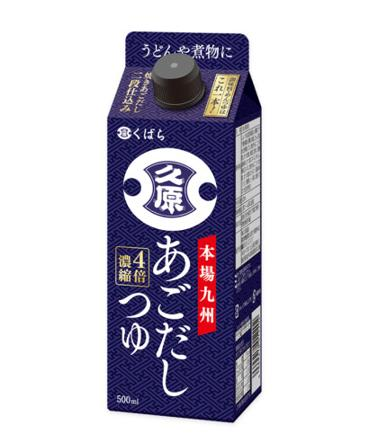

久原のあごだしつゆを購入した。私のお気に入りのめんつゆだ。これうまいです。
私はこのつゆを専らうどんに使っている。書いてある分量でつゆを作って、冷凍うどんを入れるだけでかなりうまい。
私がうどんを作るときのこだわりは、卵を入れることだ。それも溶き卵ではなく、卵を沸騰したつゆに割り落とし、なるべく触らずにそのままにして固まるのを待つ。イメージとしては、ポーチドエッグのような見た目だけど黄身もしっかり固まってる感じだ。 味噌汁にもほぼ同じ作り方で卵をよく入れる。これに関しては、味噌汁の具で一番美味いと思っている。
卵とじうどんも美味いけど、卵がつゆの中に散乱して、食べにくいのが嫌なんだよな。今気付いたけど、私は卵がめちゃくちゃ好きだ。だし巻き卵も好き。最近は良い卵焼きフライパンを買おうと考えていたし。体にもいい。